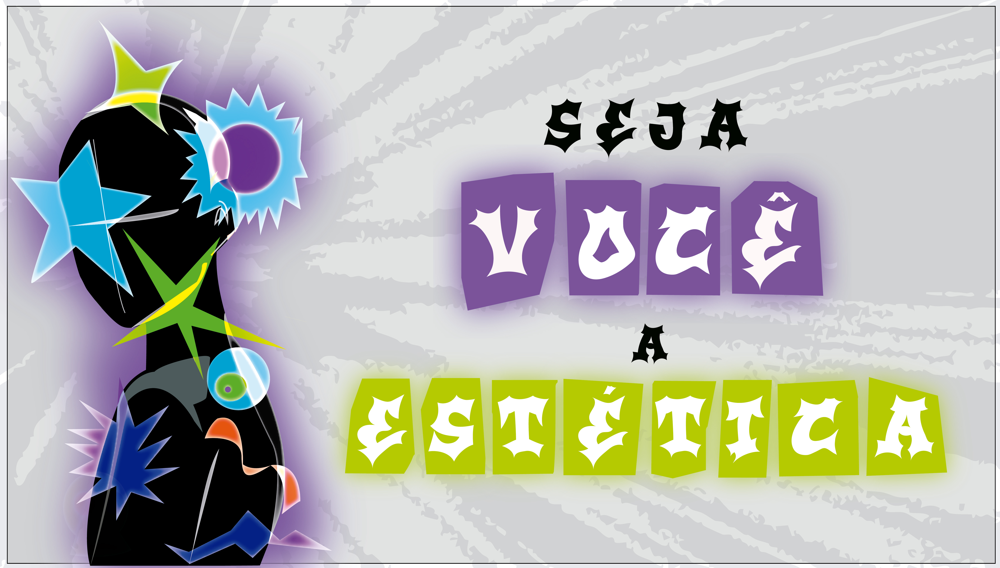

Custscene final de um projeto de jogo autoral.
Sobre mim
Oi, meu nome é Gregory e eu sou técnico em multimídia pelo Senac e atualmente estou cursando design gráfico na Etec. Eu gosto muito da arte. mas não pense que eu tô falando de desenhar, porque nisso daí… complicado. Eu gosto da arte de poder transmitir sentimentos e ideias de diversas maneiras por imagens, fotos, símbolos, peças gráfica, cinema, composições visuais, motion graphics e por aí vai.
Minha jornada
Quando criança, eu fazia vídeos e, para isso, precisava editar e criar thumbnails. Foi aí que comecei a entender o que eu gostava de fazer. Conforme fui crescendo, fui aprendendo mais e acumulando cada vez mais experiências. Entendi que eu gostava muito desse universo da arte pelo fato de poder transmitir "histórias" e, consequentemente, transmitindo sentimentos, reflexões, e experiências unicas a quem via. Bem, a seguir alguns projetos que fui fazendo ao longo desse tempo.

Projeto 1
Thumbnail para vídeo
Projeto 3
Projeto animado
Projeto 4
Edição para "Apenas um Br"

Projeto 2
Modelo capa de revista